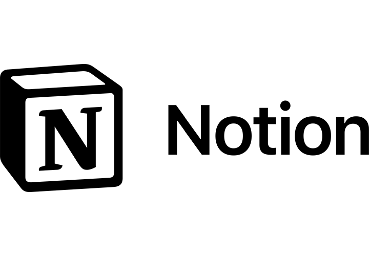

Présentation
Le projet vise à mettre en place un système efficace de gestion de tâches (ticketing) en utilisant le logiciel Notion. L'objectif principal est d'optimiser la collaboration au sein de l'équipe et d'améliorer la traçabilité des tâches.
Caractéristiques principales :
- - Tableau Kanban Intégré : Notion propose un tableau Kanban intuitif qui permet de visualiser l'avancement des tâches de manière claire et concise. Chaque colonne représente une phase du processus (à faire, en cours, terminé), offrant ainsi une vue d'ensemble instantanée.
- - Flexibilité et Personnalisation : Notion permet une personnalisation poussée des tâches, avec la possibilité d'ajouter des champs personnalisés, des étiquettes, des dates d'échéance, et bien plus encore. Cette flexibilité garantit une adaptation parfaite aux besoins spécifiques du projet.
- - Collaboration en Temps Réel : La plateforme permet une collaboration en temps réel, favorisant la communication au sein de l'équipe. Les membres peuvent commenter, attribuer des tâches et partager des fichiers directement dans l'interface Notion.

Lorsqu'une tâche m'est confiée, je me rend dans le répertoire du projet puis je créer un ticket afin de laisser une trace de la tâche à accomplir. Pour ajouter, un ticket, il suffit de cliquer sur le '+' et de rentrer le titre le la tâche puis la personne assignée à cette tâche.

Lorsqu'un ticket est créé, il faut alors rentrer les indications permettant de suivre le projet au mieux tels que la date de création du projet, son type (s'il est en cours ou terminé), le temps estimé afin de réaliser le projet, le temps réél passé sur le projet, à quelle personne est-il assigné, puis la date de début et la date de fin de réalisation du projet.

Les Technologies utilisées
